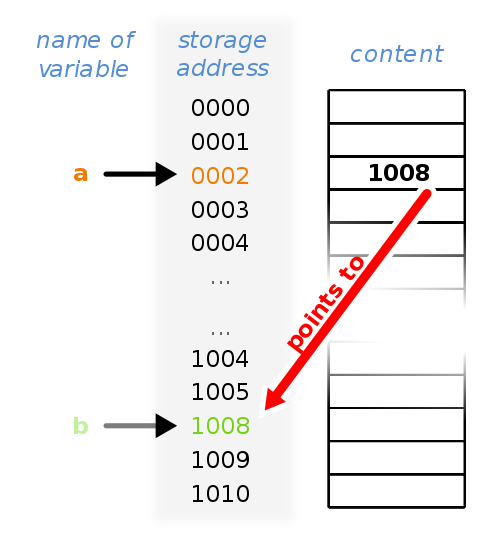

Introduction
Every time a variable is declared, some bytes are allocated to that variable depending on its datatype. For example, int takes 4 bytes, a char takes only one byte. Arrays allow allocation of even larger number of storage space or "bytes". Each of these bytes has a distinct address in the main memory. Pointer is a datatype which can store this address. Hence a pointer can serve as a "reference" to the data contained other variables. This has some useful applications, most importantly, allowing users to modify data from within a function without needing to make a copy of the data, and also allowing the user to make "linked" data structures.
Theory
A pointer is a programming language data type which can store memory addresses of other variables. A pointer variable corresponding to any data type can be declared by using * before the name of the pointer.
int *pointer1_1,*pointer2_i, var_i=5;
This would declare 2 integer pointers meant to store references(memory address) to variables of integer data type. Note that var_i is just a normal integer variable. Alternatively, pointers can also be declared as:
int* pointer1_1,pointer2_i;
int var_i=5;
The & operator can be used with any integer variable to get its memory address. So, writing
pointer1_i=&var_i;
would assign the memory address of var_i to pointer1_i.
Figure explaining the working of pointers. |
The * operator is used to access the values stored at a given address. So, writing
printf("%d\n",*pointer1_i);
would print 5 on the console. This process of accessing the value stored at a given position is known as dereferencing a pointer. Similarly, to store references to character or float variables one can define char or float type pointers. Arithmatical operations like addition and subtraction can be performed to a pointer. The nature of these arithmatic operations is what distinguishes and integer pointer from, say, a character pointer, which otherwise just store memory addresses. Adding one to a interger pointer makes to point to the next integer and hence it skips 4 bytes. Adding one to character pointer makes it to point to the next character and hence it skips only 1 byte.
A pointer can be used to allocate memory in the runtime using the malloc() function, defined in stdlib.h, by doing dynamic memory allocation. Writing
int *ptr=(int *)malloc(20*(sizeof(int));
will allocate a space 20 integer variables and store the address of the first byte in ptr. An array, infact, is just a constant pointer to which allocation is done automatically. Hence, writing
int arr[100];
is equivalent to writing
const int* arr=(int *)malloc(100*sizeof(int));